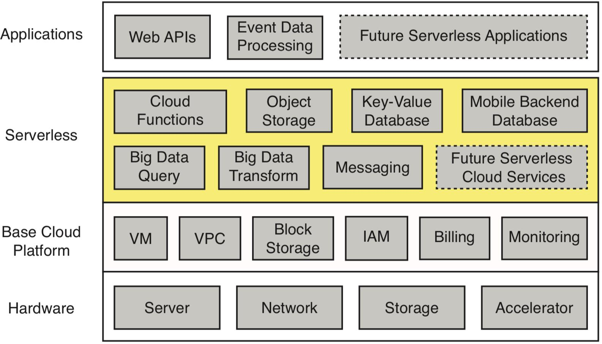
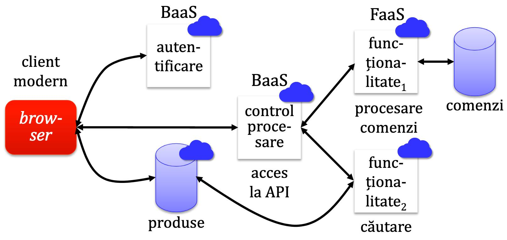
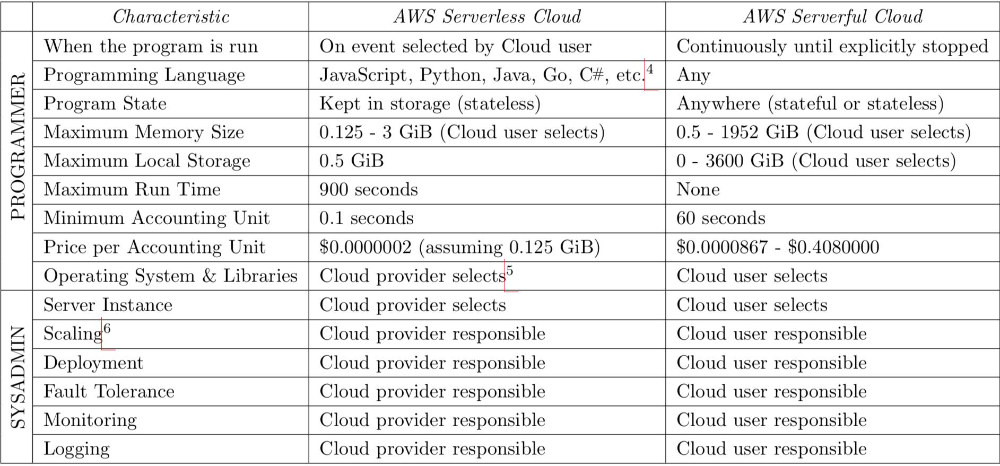
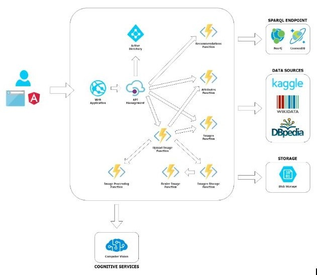
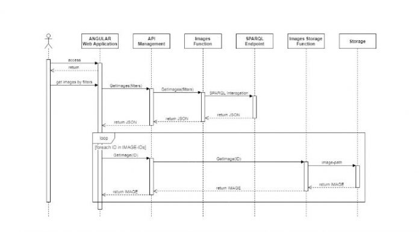
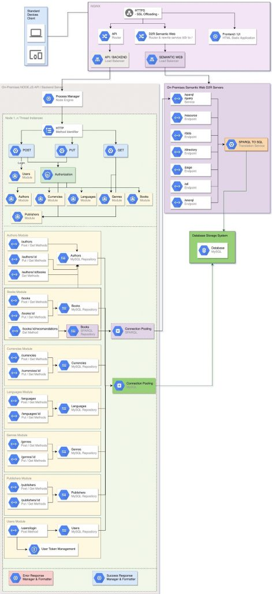

Data publicării: 20.02.2019
Autor articol: Sabin Buraga
Introducere
În contextul cloud computing (Armbrust et al., 2009), unul dintre stilurile arhitecturale populare folosit pentru dezvoltarea de sisteme Web complexe este reprezentat de paradigma serverless (Roberts, 2018).
Articolul de față prezintă o serie de considerații referitoare la direcțiile actuale ale “mișcării” serverless – pentru amănunte, a se consulta (Baldini et al., 2017; Jonas et al., 2019). De asemenea, vom discuta două studii de caz reprezentând prototipuri ale unor aplicații dezvoltate de studenții masteranzi, insistând cu precădere asupra considerațiilor arhitecturale.
Context
Încă de la “concepție”, calculul “în nori” – oferind aplicații, platforme și infrastructuri ca servicii disponibile pe baza actualelor tehnologii Internet/Web – promitea un număr de avantaje semnificative față de abordările tradiționale. Probabil cea mai importantă trăsătură este aceea a iluziei existenței unor resurse computaționale hardware și/sau software “infinite”, ce pot fi folosite la cerere, conform necesităților și/sau contextului – proprietate denumită și elasticitate. De asemenea, tehnologiile “în nori” permit realizarea de economii în ceea ce privește costurile legate de utilizarea și administrarea sistemelor, refolosirea unor resurse, simplificarea procedurilor de exploatare în practică și mentenanța.
Deși aceste deziderate sunt împlinite, observăm diverse riscuri și dificultăți, precum cele legate de disponibilitatea serviciilor și datelor (a se vedea fenomenul “data lock-in”), confidențialitate, performanța impredictibilă, scalabilitatea mecanismelor de stocare, reputația serviciilor oferite, licențierea utilizării software-ului implicat (Armbrust et al., 2009).
În cei zece ani de cloud computing, dezvoltatorii și utilizatorii încă se confruntă cu operații complexe și fluxuri de activități nu întotdeauna eficiente sau sigure. Deși paradigma cloud a facilitat managementul infrastructurii fizice, a mutat atenția asupra administrării unui volum tot mai mare de resurse virtuale bazate pe modele de calcul (mașini virtuale – virtual machines), de stocare (storage model) și de comunicare (networking model).
Astfel, pentru a rezolva aspecte semnificative referitoare la redundanță, echilibrarea încărcării, monitorizare, migrare, distribuție eficientă, actualizare a sistemelor și altele, apare necesitatea existenței unui nou strat de abstractizare a accesului la resursele unei platforme de tip cloud. Acest strat este denumit serverless – a se urmări și figura următoare.

Paradigma serverless
Noul model pentru dezvoltatea de aplicații exploatabile “în nori” presupune conceperea de funcții (cloud functions) ce pot fi executate – evident, la nivel de server – independent, fără a cauza efecte colaterale, fără ca utilizatorul să fie preocupat de managementul resurselor și alte sarcini pe care în mod automat le va efectua ofertantul de servicii cloud. Aceste funcții – implementând funcționalități specifice unei aplicații distribuite și fiind expuse consumatorului de servicii – formează așa-numita componentă FaaS (Functions-As-A-Service), cea mai importantă fațetă a unei soluții serverless.
Adițional, vor exista servicii de infrastructură reunite sub denumirea BaaS (Backend As A Service). Acestea implementează activități non-funcționale – de exemplu, autentificare, autorizare, jurnalizare, monitorizare etc. – și nu sunt expuse în exterior, fiind private, dar pot fi partajate de către serviciile interne.
Uzual, se consideră că serverless computing = FaaS + BaaS, în care serviciile implicate sunt de tip stateless (agnostice față de starea globală a sistemului) și scalează automat conform necesităților.
Un scenariu tipic este ilustrat în diagrama de mai jos, în care fiecare funcționalitate este implementată de un (micro-)serviciu Web – adaptare după (Roberts, 2018).

În esență, în cadrul unei platforme serverless, programatorul creează funcții într-un limbaj de programare de nivel înalt (C#, Go, Java, JavaScript,…) ce vor fi apelate la apariția unui eveniment – e.g., încărcarea unui fișier într-un sistem de stocare disponibil, modificarea meta-datelor asociate fișierului etc. Sistemul serverless va gestiona toate celelalte activități: selectarea unei instanțe, garantarea scalabilității, exploatarea efectivă (deployment), toleranța la defecte, monitorizarea, jurnalizarea (logging) și multe altele.
Aspectele de bază între abordarea serverless și cea tradițională (denumită și serverful cloud computing) sunt sintetizate în tabelul de mai jos, în care ca studiu de caz s-a ales populara suită de soluții AWS – Amazon Web Services. Specificațiile și prețurile sunt cele care vizează instanțe de AWS Lambda și, respectiv, AWS EC2.

Printre altele, au fost considerate următoarele criterii ce privesc în special programatorul:
- Maniera de execuție a serviciului FaaS.
- Limbajul de programare ce poate fi folosit pentru implementare.
- Starea programului (stateless versus stateful).
- Resursele alocate la rulare (memorie, spațiu de stocare persistentă, timp maxim de execuție).
Pentru amănunte de interes, a se studia raportul tehnic al lui Jonas et al. (2019). Alte detalii referitoare la suportul acordat de cele mai populare platforme facilitând exploatarea aplicațiilor serverless sunt disponibile în studiul comparativ oferit de Wang et al. (2018).
Proiecte autohtone: exemplificări
Această secțiune descrie succint două soluții originale concepute de studenții care au urmat – în primul semestru al anului universitar 2018/2019 – disciplina “Dezvoltarea aplicațiilor Web” (Buraga, 2019) în cadrul studiilor de master oferite de Facultatea de Informatică a Universității Alexandru Ioan Cuza din Iași. Contribuțiile masteranzilor constituie proiectul practic reprezentând componenta majoră a evaluării activității desfășurate la această materie.
Procesarea “în nori” a imaginilor: Imor – Image Smart Processor
Scopul proiectului a fost dezvoltarea unui sistem extensibil bazat pe micro-servicii capabil să realizeze diverse operații asupra conținutului unui volum substanțial de imagini (în speță, fotografii), în special vizualizări și filtrări multi-criteriale. Tehnologiile adoptate vizează problematicile Web-ului semantic și cele ale învățării automate (machine learning).
Platforma utilizată de autorii soluției – Daniel Țoncu, Alexandru Buzdugan și Andrei Pricop – a fost Microsoft Azure, iar procesările de imagini s-au efectuat grație Microsoft Cognitive Services, după cum se poate remarca în figura alăturată. Fiecare operație a fost expusă de o funcție implementată de un micro-serviciu.
Ca surse de date au fost alese fragmente din colecțiile de imagini oferite de Kaggle și cele puse la dispoziție de bazele de cunoștințe DBpedia și Wikidata. Intern, datele au fost stocate ca documente RDF (Resource Description Framework), fiind interogate via SPARQL.

Fluxul de activități legate de filtrarea imaginilor conform criteriilor alese utilizator este prezentat mai jos.

Recomandarea unor obiecte de interes: PhyOR – Physical Object Recommender
Al doilea studiu de caz se referă la identificarea unor (categorii de) obiecte fizice pe baza unui simbol (e.g., cod de bare, reprezentare QR) în vederea recomandării unor alternative de interes pentru utilizator. Aceste recomandări pot depinde de mai mulți factori precum:
- Disponibilitatea obiectului în altă formă (de pildă versiunea ePub a unei cărți tipărite sau varianta BluRay a unui DVD).
- Limba conținutului (e.g., existența unei traduceri pentru o lucrare dată).
- Calitate (ediția folosită sau sigilată a unui CD).
- Preferințele utilizatorului (i.e. doar obiectele având o anumită formă sau copertă).
Proiectul a fost conceput de masterandul Ion-Irinel Bucur secondat de Anca-Ramona Bantu.
La nivel de back-end, s-a adoptat o abordare modulară, fiecare modul putând fi exploatat de sine-stătător ca micro-serviciu funcțional implementat în Node.js. Sistemul de stocare persistentă adoptă modelul RDF, fiind utilizat serverul D2R disponibil sub regim open source. Funcționalitățile expuse consumatorului de date se realizează via un API RESTful, descris prin OpenAPI Specification.
Schema arhitecturii software e oferită în figura următoare.

Concluzii
În articolul de față am prezentat pe scurt o parte dintre problematicile esențiale ale abordării pragmatice serverless în dezvoltarea de aplicații complexe “în nori”. Suplimentar, am pus la dispoziție două exemple de sisteme bazate atât pe cloud computing, cât și pe actualele tehnologii ale Web-ului semantic.
Desigur, peisajul foarte dinamic – plan de intersecție a unor domenii precum calcul distribuit, Web, inginerie software, modele de programare, machine/deep learning, securitate etc. – al inițiativelor, paradigmelor, tehnologiilor și soluțiilor disponibile “în nori” prezintă mereu noi provocări și oportunități pe termen scurt, mediu și lung.
Referințe bibliografice
- Armbrust, M. et al., “Above the Clouds: A Berkeley View of Cloud Computing”, Technical Report, UCB/EECS-2009-28, University of California at Berkeley, 2009: http://www.eecs.berkeley.edu/Pubs/TechRpts/2009/EECS-2009-28.html
- Baldini, I. et al., “Serverless computing: Current trends and open problems”, Research Advances in Cloud Computing, Springer, 2017.
- Buraga, S., Dezvoltarea aplicațiilor Web, Facultatea de Informatică, UAIC, 2019: http://profs.info.uaic.ro/~busaco/teach/courses/wade/web-film.html
- Jonas, E. et al., “Cloud Programming Simplified: A Berkeley View on Serverless Computing”, Technical Report, UCB/EECS-2019-3, University of California at Berkeley, 2019: http://www2.eecs.berkeley.edu/Pubs/TechRpts/2019/EECS-2019-3.html
- Roberts, M., Serverless Architectures, 2018: http://martinfowler.com/articles/serverless.html
- Wang, L. et al., “Peeking Behind the Curtains of Serverless Platforms”, Proceedings of the 2018 USENIX Annual Technical Conference (USENIX ATC ’18), Boston, July 11–13, 2018.
- * * *, Amazon Web Services (AWS) Documentation, 2019: http://docs.aws.amazon.com/
- * * *, Kaggle Datasets, 2019: http://www.kaggle.com/datasets
- * * *, Microsoft Cognitive Services Documentation, 2019: http://docs.microsoft.com/en-us/azure/cognitive-services/
- * * *, OpenAPI Initiative, 2019: http://www.openapis.org/